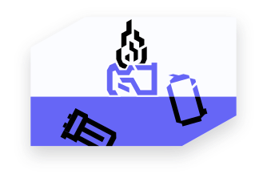
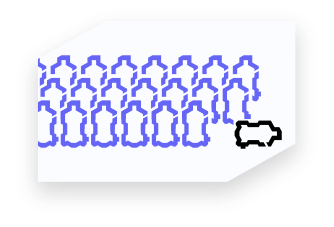
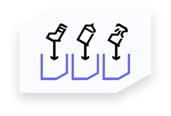
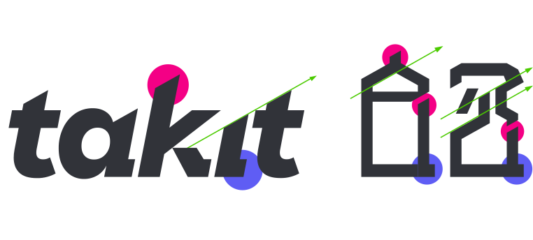
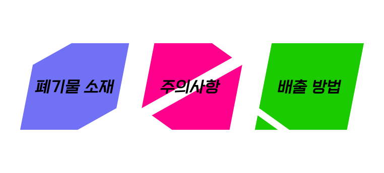
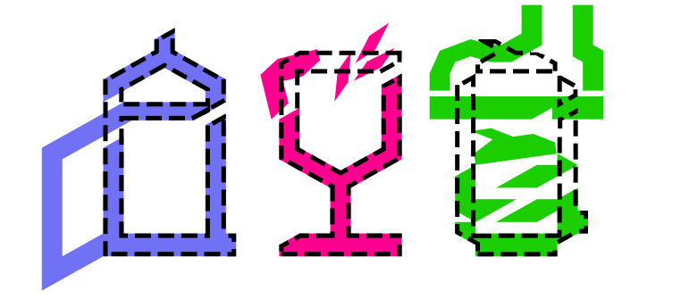

은 분리수거에 관심이 없거나 게으른 사람들을 위해
분리수거를 쉽고 올바르게 즐길 수 있도록 하는 서비스입니다.
개요

분리배출되지 않은 일반 쓰레기는 소각되거나 땅에 매립됩니다.
쓰레기를 땅에 매립하여 처리하는 건 한계점이 분명합니다.

최근 코로나 19의 영향으로 일회용품의 폐기가 증가함에 따라
쓰레기 분류 업체의 노동 시간이 함께 증가하고 있습니다.

쓰레기를 각 개인이 분리 배출을 잘 한다면 쓰레기 소각으로 인한 대기 문제,
매립지가 부족한 문제, 쓰레기 분류 업체의 일손 부족 문제를 완화할 있을 것입니다.
목표
takit은 분리배출하는 습관을 길들이기 위해 미션과 보상을 제공하며
분리배출 가이드를 통해 배출을 쉽게 할 수 있도록 도와줍니다.
각 개인이 환경 문제에 관심을 가지고 실천하는 것이 takit의 목표입니다.
핵심 기능
미션과 보상
지속적인 분리수거 습관 형성을 위해 매일 제공되는 미션을 클리어하면 보상을 받을 수 있다.
분리수거 가이드
올바른 분리배출 방법을 쉽게 찾을 수 있는 가이드를 제공
쓰레기의 바코드를 인식하여 해당 제품의 분리 방법 검색
캘린더
캘린더에서 분리수거 일정을 기록
환경 뉴스
환경 뉴스를 지속적으로 노출하여 환경 문제에 관심을 들이도록 유도
브랜드 아이덴티티
분리수거를 유쾌하고 재미있게 즐기자
컬러
브랜드 컬러는 플라스틱에 자주 쓰이는 형광색을 사용하였습니다.
로고
takit에서 보상으로 제공하는 키트의 날카로움을 본따 로고에 형상화 하였습니다.
분리배출 가이드의 픽토그램

로고의 기울기와 두께, 날카로운 획의 끝을 기반으로 그리드 시스템을 만들었습니다.

픽토그램은 쓰레기 소재, 분리 배출 방법, 주의사항으로 나뉩니다.

쓰레기 소재는 세로로 긴 6*9의 비율로 통일했으며
배출방법과 주의사항은 쓰레기 소재를 기본형으로 변형하였습니다.
브랜드 아이덴티티 가이드라인